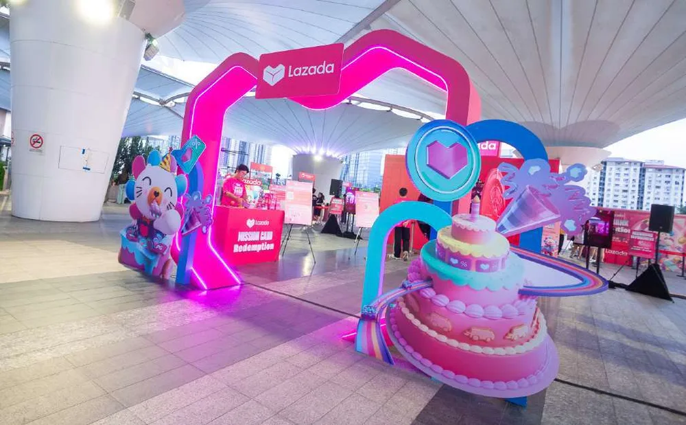

SERVICES | CORPORATE EVENT MANAGEMENT
One-stop corporate event management, from concept to execution.
Procurement-friendly scope under one vendor: concept, design, production, logistics, manpower, AV, staging, entertainment, gifts, registration and on-site execution.
Request a ProposalCorporate procurement teams prefer suppliers who can manage more scope under one vendor — for cost control, supplier performance and risk mitigation. PRINS is built exactly for that: one accountable partner, one timeline, one point of contact, and an in-house team covering every component of a corporate event.
Event types we manage
| Event type | Typical need |
|---|---|
| Annual Dinner & Gala Night | Year-end appreciation, themed dinners, awards |
| Award Night & Sales Rally | Recognition events for sales-driven organisations |
| Corporate Conference / Town Hall / Open Day | B2B, internal comms and government-linked events |
| Product Launch Event Management | Marketing-driven launches with media and stakeholders |
| Festive Celebrations | CNY, Raya, Christmas and year-round office culture events |
In-house event production capabilities
- Event concept and creative direction
- Stage design
- Booth design and fabrication
- Backdrop and photo wall
- AV, lighting and sound coordination
- Multimedia design
- Registration counter setup
- Interactive games and gamification
- Talent, emcee and performance sourcing
- Seasonal entertainment such as lion dance
- Photography and videography
Delivered at scale
PRINS has produced signature corporate events including Lazada’s Annual Party and Family Day series, Agoda’s Winter Wonderland Christmas celebration for 1,000 employees across two offices, and Agoda’s “The Agoda Olympics” Family Day for more than 1,500 participants — each covering concept planning, venue coordination, thematic decoration, engagement activities and on-ground management.
Our corporate event scope is designed for organisations with a dedicated event budget. [Optional “projects start from RM X” line — publish only once PRINS confirms a figure.]
Corporate events — FAQs
Can you help with venue sourcing, AV, manpower and entertainment?
Yes. Venue sourcing, AV, lighting and sound coordination, manpower planning, emcees, performers, DJs, promoters and crew are all within our scope.
How long is the lead time for printing, fabrication and production?
Lead times depend on scope and quantity. Share your event date and requirements and we will confirm a production schedule in the proposal. [Typical range to be confirmed by PRINS.]
Do you provide post-event photos, videos or reports?
Yes. We capture event highlights and can deliver photo and video content plus post-event reporting and documentation.
